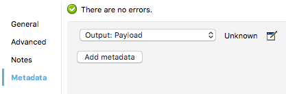
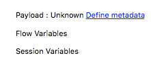
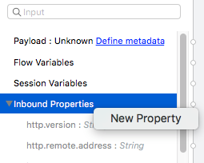
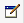
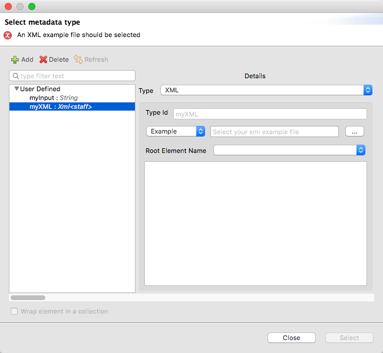

Defining Metadata
Overview
Several elements in your Mule flow automatically expose metadata about the expected input and output ( see DataSense enabled connectors for a list). For components that don’t expose this metadata, you can easily define it manually, or via an example or schema.
This metadata is handled by DataSense and exposed in design time on every component of your flows, helping you debug your application and know if the expected data structure differs from what’s truly being sent. It also providing smart autocomplete options. To use the drag and drop UI of the Transform Message Component, you must define its input and output metadata.
|
As an alternative to what’s explained in this document, the HTTP Request Connector can reference a RAML file, and expose metadata based on the operations listed on this API definition.

Similarly, the Web Service consumer can include a WSDL file to expose metadata based on this service description. |
Accessing the Metadata Editor
You can reach the metadata editor screen in various ways:
-
On the properties editor of most components, you can select the Metadata tab
-
On a Transform Message Component, you can right-click on the input or output and select Set Metadata. If nothing is set, you will see a Define metadata link:
If your input metadata is missing variables, inbound properties, outbound properties, session variables or record variables that you know exist in the incoming mule message, you can manually add these too in the editor. Just right-click on one of these categories and select New Property or New Variable.
 -
On the package explorer, right click on your project and then select Mule > Manage Metadata types.
| For DataWeave, if you want to define metadata via the Mule project XML code, see DataWeave XML Reference. |
Metadata Tab Basic Usage
The custom metadata tab is included in all message processors except connectors (which already contribute their own metadata to DataSense). The custom metadata tab allows you to define metadata types for message processors that do not automatically contribute their own types.
The image below shows the Metadata tab on the properties editor of the File endpoint.
Clicking Add Metadata (outlined in the image above) opens a new set of fields, shown below.
Clicking the dropdown menus allows you to select between the available metadata types.
The defined metadata types are automatically recognized as inputs by the next message processor in the flow.
You can define the following types of input and output metadata:
-
FlowVars
-
SessionVars
-
Message Inbound Properties
-
Message Outbound Properties
-
Message Payload
| When editing metadata on an inbound endpoint, only outbound metadata is available. |
Defining Metadata via the UI
The metadata classes that you have previously defined in the current Mule project will be displayed for you to select one if appropriate:
You can also create a new metadata class, to do so:
-
Click the green plus sign at the top.
-
Give the new type a name
-
Select a data format (eg: XML, JSON, CSV, etc)
If the type of your data is undeclared or not understood it will default to 'application/java', a warning will be logged. -
Depending on the selected option, there are different ways to define the data structure. With some formats, the structure can be inferred from an example, others require a schema, for some of these a builtin editor UI can be used to define this schema easily.
Format Sample Schema Editor JSON
X
X
XML
X
X
Java
X
Map
X
CSV
X
X
Fixed Width
X
X
Copybook
X
X
Flat File
X
Simple
X
Excel
X
The Excel type is currently in Beta.
When defining the structure through the editor, you’re implicitly creating a schema for that type. These schemas are stored in your project’s src/main/resources folder, and you can open these and edit them freely on Anypoint Studio.
After you create a new type, you can associate any new metadata you create with this new type to avoid having to define it again.
Fixed Width
Copybook and Fixed Width are technically subsets of Flat File, and they actually all produce Flat File schemas. The Flat File type is recommended only for use cases that aren’t covered by the other two.
See reference docs for the schema structures required for Flat-File and EDI.
On the fixed width editor, you can configure several properties of each of your fields through the format column of each. Click on the button to open a menu where you can select not only the type of the field, but also its alignment, decimals, if extra characters are to be filled with zeros or empty spaces, etc.
|
Wrap Element in Collection
For any type, you can click the Wrap Element in a Collection checkbox, at the bottom of the metadata editor window:
This sets the metadata as a list, where each element on the list is an instance of the structure you defined. So for example if you set your metadata as an XML structure, clicking this checkbox will make your metadata a list that contains N instances of that XML structure.
Reader and Writer Properties
On the Transform Message component Some formats such as CSV also allow you to then set some additional parameters in the reader configuration or the writer-configuration, depending on if you want to set the input or the output.
Simple Example
In this example, the application’s flow takes an XML file as input, and passes it to a Transform Message component. This transformer automatically inherits the input fields from the File endpoint, even if no file has yet been received.
This example uses the XML file displayed below as a sample. To complete the example, copy and save the code below into an XML file on your hard drive, or download it here. You’ll need to supply it to the metadata editor.
<staff>
<employee>
<firstname>Annie</firstname>
<lastname>Point</lastname>
<gender>F</gender>
<phone>1234-12345</phone>
</employee>
<manager>
<firstname>Max</firstname>
<lastname>Mule</lastname>
<gender>M</gender>
<phone>321-4321</phone>
</manager>
</staff>-
Create a new Mule project
-
Place a File endpoint as the inbound endpoint in the flow, configure it so that its 'path' points to a folder in your hard drive
-
Click the Metadata tab, then click the Add Metadata button. Studio displays the metadata editor, shown below.
The field Output: Payload is automatically selected from the drop-down menu. Click the edit icon  to edit the field. Studio displays the Define Type window, shown below.
-
Click the green plus sign at the top.
-
Give the new type a name . In this case, we use
myXML. -
Click the dropdown menu next to Type and select a data format: XML
-
Click the drop-down menu that displays Schema, then select Example.
 -
Click the ellipsis (…) button to use the filesystem browser to navigate to, then select the example XML file (provided above).
-
Once you have selected the file, click Select.
-
Now, place a Transform Message Component in the flow after the File inbound endpoint. The input metadata fields for the DataWeave transformer are automatically defined, as shown below.
Message processors after the File endpoint inherit the defined metadata. In this example, as you added a metadata definition to the File endpoint’s output, this metadata type is expected as an input by the DataWeaver transformer. After you define a transformation for this component to carry out, any other message processors that you place after it in the flow will expect the resulting structure from applying the transformation onto the metadata you defined in the endpoint.
See Also
-
View complete example projects that use DataWeave in the Anypoint Exchange